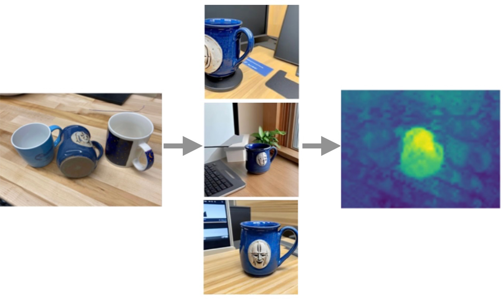

{kind=link}
About Me
I'm a fourth-year PhD student at MIT, advised by Phillip Isola. I am supported by the NSF Graduate Research Fellowship, and previously by the MIT HDTV Grand Alliance Fellowship. I am broadly interested in synthetic data and self-improvement in deep learning.
Previously I got my bachelors in Computer Science and in Mathematics at MIT, working at the MIT Center for Brains, Minds, and Machines with Pawan Sinha and Xavier Boix. In the past I've also been fortunate to intern at DeepMind (large language models), D. E. Shaw (reinforcement learning research), Apple (applied machine learning), and Two Sigma (software engineering). In my free time I enjoy hiking, running, and tennis.
Recent News
- [Oct 2025] Our preprint Better Together: Leveraging Unpaired Multimodal Data for Stronger Unimodal Models is on Arxiv.
- [Jun 2025] Gave a talk at the CVPR Syntagen Workshop on Personalized Representation from Personalized Generation
- [May 2025] I started an internship at FAIR, working with Julia Kempe on self-improvement with LLMs!
- [Apr 2025] Attending ICLR! I'm presenting our work on personalized representations at the main conference.
- [Apr 2025] Gave a talk at the Stanford NeuroAILab.
- [Mar 2025] Gave a talk at Cohere for AI (recording here).
- [Jan 2025] Our paper Personalized Representation from Personalized Generation was accepted to ICLR 2025.
- [Dec 2024] Our preprint What Makes for a Good Stereoscopic Image is on Arxiv.
- More...
Publications
* indicates equal contribution
|
|
Sharut Gupta, Shobhita Sundaram, Chenyu Wang, Stefanie Jegelka, Phillip Isola Preprint. Paper Website Code |
|
|
Netanel Y. Tamir*, Shir Amir*, Ranel Itzhaky, Noam Atia, Shobhita Sundaram, Stephanie Fu, Ron Sokolovsky, Phillip Isola, Tali Dekel, Richard Zhang, Miriam Farber CVPR Computer Vision for Metaverse Workshop, 2025. Paper |
|

|
Shobhita Sundaram*, Julia Chae*, Yonglong Tian, Sara Beery§, Phillip Isola§. ICLR, 2025. Paper Website Code Data |
|
|
Shobhita Sundaram*, Stephanie Fu*, Lukas Muttenthaler, Netanel Tamir, Lucy Chai, Simon Kornblith, Trevor Darrell, Phillip Isola. NeurIPS, 2024. Paper Website Code |

|
Stephanie Fu*, Netanel Tamir*, Shobhita Sundaram*, Lucy Chai, Richard Zhang, Tali Dekel, Phillip Isola. NeurIPS, 2023 (spotlight). Paper Website Code |
|
|
Shobhita Sundaram*, Darius Sinha*, Matthew Groth, Tomotake Sasaki, Xavier Boix Scientific Reports, 2022. Workshop on Generalization Beyond the Training Distribution in Brains and Machines, ICLR 2021. Paper Code Poster |

|
Shobhita Sundaram*, Neha Hulkund* Workshop on Applied Data Science for Healthcare, KDD 2021 |

|
Kimberly Villalobos*, Vilim Stih*, Amineh Ahmadinejad*, Shobhita Sundaram, Jamell Dozier, Andrew Francl, Frederico Azevedo, Tomotake Sasaki, Xavier Boix Neural Computation, 2021 |
Invited Talks
- CVPR Syntagen Workshop, June 2025. Personalized Representation from Personalized Generation. [Recording]
- Stanford NeuroAILab, April 2025. Representation Learning with Perceptual Alignment.
- Cohere for AI, March 2025. Personalized Representation from Personalized Generation. [Recording]
- Efficient Text-to-Image and Text-to-3D modeling Tutorial, ECCV 2024. Evaluating Text-to-Image Models. [Slides]
- Adobe GenTech Seminar, October 2023. DreamSim: Learning New Dimensions of Human Visual Similarity using Synthetic Data.
- Voxel51 Computer Vision Meetup, July 2023. DreamSim: Learning New Dimensions of Human Visual Similarity using Synthetic Data.
Service
- Organizer: Synthetic Data for Computer Vision Workshop, CVPR 2024, 2025
- Organizer: Efficient Text-to-Image and Text-to-3D modeling Tutorial, ECCV 2024